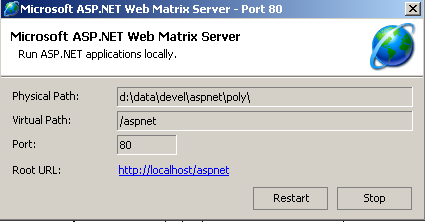

3. مقدمة في تطوير مواقع الويب باستخدام ASP.NET
3.1. مقدمة
قدم الفصل السابق مبادئ تطوير الويب، والتي لا تعتمد على لغة البرمجة المستخدمة. حالياً، تهيمن ثلاث تقنيات على سوق تطوير الويب:
- J2EE، وهي منصة تطوير Java. بالاقتران مع تقنية Struts، المثبتة على خوادم تطبيقات متنوعة، تُستخدم منصة J2EE بشكل أساسي في المشاريع واسعة النطاق. وبسبب اللغة المستخدمة — Java — يمكن لتطبيق J2EE أن يعمل على أنظمة التشغيل الرئيسية (Windows، Unix، Linux، Mac OS، إلخ)
- PHP، وهي لغة مفسرة مستقلة أيضًا عن نظام التشغيل. على عكس Java، فهي ليست لغة موجهة للكائنات. ومع ذلك، من المتوقع أن يضيف إصدار PHP5 ميزات موجهة للكائنات إلى اللغة. نظرًا لسهولة استخدامها، تُستخدم PHP على نطاق واسع في المشاريع الصغيرة والمتوسطة الحجم.
- ASP.NET هي تقنية تعمل فقط على أجهزة Windows المزودة بمنصة .NET (XP، 2000، 2003، إلخ). يمكن أن تكون لغة التطوير المستخدمة أي لغة متوافقة مع .NET، أي أكثر من اثنتي عشرة لغة، بدءًا من لغات Microsoft (C#، VB.NET، J#)، وDelphi من Borland، وPerl، وPython، ...
قدم الفصل السابق أمثلة موجزة لكل من هذه التقنيات الثلاث. يركز هذا المستند على تطوير الويب باستخدام ASP.NET بلغة VB.NET. نفترض أنك على دراية بهذه اللغة. هذه النقطة مهمة. هنا، نحن مهتمون فقط باستخدامها في سياق تطوير الويب. دعونا نتوسع في هذه النقطة من خلال مناقشة منهجية MVC لتطوير الويب.
سيتم تنظيم تطبيق الويب الذي يتبع نموذج MVC على النحو التالي:

تهدف هذه البنية، المعروفة باسم بنية ثلاثية الطبقات أو ثلاثية المستويات، إلى الالتزام بنموذج MVC (النموذج-العرض-وحدة التحكم):
- واجهة المستخدم هي V (العرض)
- منطق التطبيق هو C (وحدة التحكم)
- مصادر البيانات هي M (النموذج)
غالبًا ما تكون واجهة المستخدم عبارة عن متصفح ويب، ولكنها قد تكون أيضًا تطبيقًا مستقلًا يرسل طلبات HTTP إلى خدمة الويب عبر الشبكة ويقوم بتنسيق النتائج التي يتلقاها. تتكون منطقية التطبيق من نصوص برمجية تعالج طلبات المستخدم. غالبًا ما يكون مصدر البيانات قاعدة بيانات، ولكنه قد يكون أيضًا ملفات مسطحة بسيطة، أو دليل LDAP، أو خدمة ويب عن بُعد، وما إلى ذلك. من مصلحة المطور الحفاظ على درجة عالية من الاستقلالية بين هذه الكيانات الثلاثة بحيث إذا تغير أحدها، لا يتعين على الاثنين الآخرين التغيير، أو يتغيران بشكل طفيف فقط.
- سيتم وضع منطق الأعمال الخاص بالتطبيق في فئات منفصلة عن الفئة التي تتحكم في حوار الطلب والاستجابة. وبالتالي، يمكن أن يتكون كتلة [منطق التطبيق] أعلاه من العناصر التالية:

داخل كتلة [منطق التطبيق]، يمكننا التمييز بين
- فئة وحدة التحكم، التي تعمل كنقطة دخول للتطبيق.
- كتلة [Business Classes]، التي تجمع الفئات اللازمة لمنطق التطبيق. هذه الفئات مستقلة عن العميل.
- كتلة [Data Access Classes]، التي تجمع الفئات اللازمة لاسترداد البيانات المطلوبة من قبل السيرفلت، وغالبًا ما تكون بيانات ثابتة (قاعدة بيانات، ملفات، خدمة ويب، إلخ)
- كتلة صفحات ASP التي تشكل طرق عرض التطبيق.
في الحالات البسيطة، غالبًا ما يتم اختزال منطق التطبيق إلى فئتين:
- فئة وحدة التحكم التي تتولى الاتصال بين العميل والخادم: معالجة الطلب وإنشاء استجابات متنوعة
- فئة الأعمال التي تستقبل البيانات المراد معالجتها من وحدة التحكم وتعيد النتائج إليها. ثم تدير فئة الأعمال هذه الوصول إلى البيانات الدائمة بنفسها.
يكمن الجانب الفريد لتطوير الويب في كتابة فئة وحدة التحكم وصفحات العرض. ففئات الأعمال والوصول إلى البيانات هي فئات .NET قياسية يمكن استخدامها في تطبيق ويب وكذلك في تطبيق Windows أو حتى تطبيق وحدة التحكم. تتطلب كتابة هذه الفئات فهمًا قويًا للبرمجة الموجهة للكائنات. في هذا المستند، سيتم كتابتها بلغة VB.NET، لذا نفترض أنك بارع في هذه اللغة. من هذا المنظور، لا داعي للتوسع في كود الوصول إلى البيانات أكثر من اللازم. في معظم الكتب التي تتناول ASP.NET، يُخصص فصل لـ ADO.NET. يوضح الرسم البياني أعلاه أن الوصول إلى البيانات تتم معالجته بواسطة فئات .NET قياسية لا تدرك أنها تُستخدم في سياق الويب. لا يحتاج وحدة التحكم، التي تعمل كقائد فريق لتطبيق الويب، إلى القلق بشأن ADO.NET. فهي تحتاج ببساطة إلى معرفة الفئة التي يجب أن تطلب منها البيانات المطلوبة وكيفية طلبها. هذا كل شيء. إن وضع كود ADO.NET في وحدة التحكم ينتهك مفهوم MVC الموضح أعلاه، ولن نقوم بذلك.
3.2. الأدوات
هذا المستند مخصص للطلاب، لذا سنعمل باستخدام أدوات مجانية متاحة للتنزيل على الإنترنت:
- منصة .NET (المترجمات، الوثائق)
- بيئة تطوير WebMatrix، التي تتضمن خادم الويب Cassini
- أنظمة إدارة قواعد البيانات المختلفة (MSDE، MySQL)
يُنصح القراء بالرجوع إلى الملحق "أدوات الويب"، الذي يشرح أين يمكن العثور على هذه الأدوات المختلفة وكيفية تثبيتها. في معظم الأحيان، لن نحتاج سوى إلى ثلاث أدوات:
- محرر نصوص لكتابة تطبيقات الويب.
- أداة تطوير VB.NET لكتابة كود VB عندما يكون حجمه كبيرًا. يوفر هذا النوع من الأدوات عمومًا المساعدة في إدخال الكود (الإكمال التلقائي) واكتشاف أخطاء بناء الجملة، إما أثناء كتابة الكود أو أثناء التحويل البرمجي.
- خادم ويب لاختبار تطبيقات الويب التي قمت بكتابتها. سنستخدم Cassini في هذا المستند. يمكن للقراء الذين لديهم خادم IIS استبدال Cassini بـ IIS. كلاهما متوافق مع .NET. ومع ذلك، يقتصر Cassini على الاستجابة للطلبات المحلية فقط (localhost)، في حين أن IIS يمكنه الاستجابة للطلبات الواردة من أجهزة خارجية.
تعد Visual Studio.NET من Microsoft بيئة تجارية ممتازة للتطوير في VB.NET. تتيح لك بيئة التطوير المتكاملة (IDE) الغنية بالميزات إدارة جميع أنواع المستندات (كود VB.NET، مستندات HTML، XML، أوراق الأنماط، إلخ). للكتابة الكود، يوفر المساعدة التي لا تقدر بثمن من خلال "إكمال" الكود التلقائي. ومع ذلك، فإن هذه الأداة، التي تحسن بشكل كبير من إنتاجية المطور، لها جانب سلبي: فهي تحصر المطور في وضع تطوير قياسي وهو بالتأكيد فعال ولكنه ليس مناسبًا دائمًا.
من الممكن استخدام خادم Cassini خارج [WebMatrix]، وهذا ما سنفعله غالبًا. يوجد الملف القابل للتنفيذ للخادم في <WebMatrix>\<version>\WebServer.exe، حيث <WebMatrix> هو دليل تثبيت [WebMatrix] و<version> هو رقم الإصدار:

لنفتح نافذة موجه الأوامر وننتقل إلى مجلد خادم Cassini:
E:\Program Files\Microsoft ASP.NET Web Matrix\v0.6.812>dir
...
29/05/2003 11:00 53 248 WebServer.exe
...
دعونا نقوم بتشغيل [WebServer.exe] بدون أي معلمات:

تُظهر اللوحة أعلاه أن تطبيق [WebServer/Cassini] يقبل ثلاثة معلمات:
- /port: رقم منفذ خدمة الويب. يمكن أن يكون أي رقم. القيمة الافتراضية هي 80
- /path: المسار الفعلي لمجلد على القرص
- /vpath: المجلد الافتراضي المرتبط بالمجلد الفعلي السابق.
سنضع أمثلةنا في شجرة ملفات يضم الدليل الجذري P والمجلدات chap1 و chap2 و... للفصول المختلفة في هذا المستند. وسنربط المسار الافتراضي V بهذا المجلد الفعلي P. كما سنقوم بتشغيل Cassini باستخدام الأمر التالي في DOS:
على سبيل المثال، إذا أردنا أن يكون الجذر الفعلي للخادم هو المجلد [D:\data\devel\aspnet\poly] وأن يكون جذره الافتراضي هو [aspnet]، فسيكون أمر DOS لبدء تشغيل خادم الويب كما يلي:
يمكنك حفظ هذا الأمر كاختصار. بمجرد تشغيله، يضع Cassini رمزًا في شريط المهام. يؤدي النقر المزدوج عليه إلى فتح لوحة بدء/إيقاف الخادم:

تعرض اللوحة المعلمات الثلاثة المستخدمة لتشغيله. وتوفر زرين لبدء التشغيل/إيقاف التشغيل بالإضافة إلى رابط اختبار إلى جذر شجرة دليل الويب الخاص به. نضغط عليه. يفتح متصفح ويتم طلب عنوان URL [http://localhost/aspnet]. نرى محتويات المجلد المحدد في حقل [المسار الفعلي] أعلاه:

في هذا المثال، يتوافق عنوان URL المطلوب مع مجلد بدلاً من مستند ويب، لذا عرض الخادم محتويات هذا المجلد بدلاً من مستند ويب محدد. إذا كان هناك ملف باسم [default.aspx] في هذا المجلد، فسيتم عرضه. على سبيل المثال، لنقم بإنشاء الملف التالي ووضعه في جذر شجرة الويب الخاصة بـ Cassini (d:\data\devel\aspnet\poly هنا):
الآن دعونا نطلب عنوان URL [http://localhost/aspnet] باستخدام متصفح:

نرى أنه في الواقع، تم عرض عنوان URL [http://localhost/aspnet/default.aspx]. لاحقًا في هذا المستند، سنشرح كيفية تكوين Cassini باستخدام الترميز Cassini(path,vpath)، حيث [path] هو اسم المجلد الجذر لشجرة دليل الويب الخاص بالخادم و[vpath] هو المسار الافتراضي المرتبط. تذكر أنه مع خادم Cassini(path,vpath)، فإن عنوان URL [http://localhost/vpath/XX] يتوافق مع المسار الفعلي [path\XX]. سنضع جميع مستنداتنا تحت دليل جذر فعلي سنسميه <webroot>. وبالتالي، يمكننا الإشارة إلى الملف <webroot>\chap2\here1.aspx. بالنسبة لكل قارئ، سيكون دليل <webroot> هذا مجلدًا على جهازه الشخصي. هنا، ستُظهر لقطات الشاشة أن هذا المجلد غالبًا ما يكون [d:\data\devel\aspnet\poly]. ومع ذلك، لن يكون هذا هو الحال دائمًا، حيث تم إجراء الاختبارات على أجهزة مختلفة.
3.3. الأمثلة الأولى
سنقدم بعض الأمثلة البسيطة لصفحات الويب الديناميكية التي تم إنشاؤها باستخدام VB.NET. ونشجع القراء على اختبارها للتحقق من أن بيئة التطوير الخاصة بهم مثبتة بشكل صحيح. سنرى أن هناك عدة طرق لإنشاء صفحة ASP.NET. وسنختار واحدة منها لبقية أعمال التطوير لدينا.
3.3.1. مثال أساسي - البديل 1
الأدوات المطلوبة: محرر نصوص، خادم الويب Cassini
سنعيد النظر في المثال من الفصل السابق. سننشئ الملف [heure1.aspx] التالي:
<html>
<head>
<title>Demo asp.net </title>
</head>
<body>
Il est <% =Date.Now.ToString("T") %>
</body>
</html>
هذا الرمز هو رمز HTML مع علامة <% ... %> خاصة. داخل هذه العلامة، يمكنك وضع رمز VB.NET. هنا، الرمز
سلسلة C تمثل الوقت الحالي. ثم يتم استبدال العلامة <% ... %> بهذه السلسلة C. لذا، إذا كانت C هي السلسلة 18:11:01، فإن سطر HTML الذي يحتوي على كود VB.NET يصبح:
لنضع الكود السابق في الملف [<webroot>\chap2\heure1.aspx]. لنبدأ تشغيل Cassini(<webroot>,/aspnet) ونطلب عنوان URL [http://localhost/aspnet/chap2/heure1.aspx] في متصفح:

بمجرد حصولنا على هذه النتيجة، نعلم أن بيئة التطوير قد تم تثبيتها بشكل صحيح. تم ترجمة صفحة [heure1.aspx] لأنها تحتوي على كود VB.NET. أنتجت ترجمتها ملف DLL تم تخزينه في مجلد النظام ثم تم تنفيذه بواسطة خادم Cassini.
3.3.2. مثال أساسي - البديل 2
الأدوات المطلوبة: محرر نصوص، خادم الويب Cassini
يجمع المستند [heure1.aspx] بين كود HTML وكود VB.NET. في مثل هذا المثال البسيط، لا يمثل هذا مشكلة. إذا كنت بحاجة إلى تضمين المزيد من كود VB.NET، فستحتاج إلى فصل كود HTML عن كود VB بشكل أوضح. يمكن القيام بذلك عن طريق وضع كود VB داخل علامة <script>:
<script runat="server">
' calcul des données à afficher par le code HTML
...
</script>
<html>
....
' affichage des valeurs calculées par la partie script
</html>
يوضح المثال [heure2.aspx] هذه الطريقة:
<script runat="server">
Dim maintenant as String=Date.Now.ToString("T")
</script>
<html>
<head>
<title>Demo asp.net </title>
</head>
<body>
Il est
<% =maintenant %>
</body>
</html>
نضع المستند [heure2.aspx] في شجرة الدليل [<webroot>\chap2\heure2.aspx] على خادم الويب Cassini (<webroot>,/aspnet) ونطلب المستند باستخدام متصفح:

3.3.3. مثال أساسي - البديل 3
الأدوات المطلوبة: محرر نصوص، خادم الويب Cassini
نأخذ فصل كود VB وكود HTML خطوة إلى الأمام عن طريق وضعهما في ملفين منفصلين. سيكون كود HTML في الملف [heure3.aspx] وكود VB في [heure3.aspx.vb]. سيكون محتوى [heure3.aspx] كما يلي:
<%@ Page Language="vb" src="heure3.aspx.vb" Inherits="heure3" %>
<html>
<head>
<title>Demo asp.net</title>
</head>
<body>
Il est
<% =maintenant %>
</body>
</html>
هناك اختلافان أساسيان:
- التوجيه [Page] مع سمات لم يتم تعريفها بعد
- استخدام المتغير [now] في كود HTML على الرغم من أنه لم يتم تهيئته في أي مكان
يُستخدم التوجيه [Page] هنا للإشارة إلى أن كود VB الذي سيقوم بتهيئة الصفحة موجود في ملف آخر. تحدد السمة [src] هذا الملف. سنرى أن كود VB ينتمي إلى فئة تسمى [heure3]. وبشكل غير مرئي للمطور، يتم تحويل ملف .aspx إلى فئة مشتقة من فئة أساسية تسمى [Page]. هنا، يجب أن يكون مستند HTML الخاص بنا مشتقًا من الفئة التي تحدد وتحسب البيانات التي يحتاج إلى عرضها. في هذه الحالة، هي فئة [heure3] المحددة في ملف [heure3.aspx.vb]. لذلك، يجب تحديد هذه العلاقة بين المستند الأم والمستند الابن بين مستند VB [heure3.aspx.vb] ومستند HTML [heure3.aspx]. تحدد السمة [inherits] هذه العلاقة. يجب أن تشير إلى اسم الفئة المحددة في الملف الذي تشير إليه السمة [src].
دعونا الآن نفحص كود VB للصفحة:
Public Class heure3
Inherits System.Web.UI.Page
' data of the web page to be displayed
Protected maintenant As String
Private Sub Page_Load(ByVal sender As System.Object, ByVal e As System.EventArgs) Handles MyBase.Load
'calculates the web page data
maintenant = Date.Now.ToString("T")
End Sub
End Class
لاحظ النقاط التالية:
- يحدد كود VB فئة [heure3] مشتقة من فئة [System.Web.UI.Page]. وهذا هو الحال دائمًا، حيث يجب أن تكون صفحة الويب مشتقة دائمًا من [System.Web.UI.Page].
- تعلن الفئة عن سمة محمية [now]. ونحن نعلم أن السمة المحمية يمكن الوصول إليها مباشرة في الفئات المشتقة. وهذا ما يسمح لمستند HTML [heure3.aspx] بالوصول إلى قيمة بيانات [now] في كوده.
- يتم تهيئة السمة [maintenant] في إجراء [Page_Load]. سنرى لاحقًا أن كائن [Page] يتلقى إخطارًا من خادم الويب بعدد من الأحداث. يحدث الحدث [Load] عند إنشاء كائن [Page] ومكوناته. يتم تعيين معالج هذا الحدث بواسطة التوجيه [Handles MyBase.Load]
- يمكن أن يكون اسم [XX] لمعالج الحدث أي شيء. يجب أن تكون توقيعه هو التوقيع الموضح أعلاه. لن نشرح هذا بالتفصيل في الوقت الحالي.
- غالبًا ما نستخدم معالج الأحداث [Page.Load] لحساب قيم البيانات الديناميكية التي يجب أن تعرضها صفحة الويب.
توجد الملفات [heure3.spx] و [heure3.aspx.vb] في [<webroot>\chap2]. ثم، باستخدام متصفح، نطلب عنوان URL [http://localhost/aspnet/chap2/heure3.aspx] من خادم الويب (<webroot>,/aspnet):

3.3.4. مثال أساسي - البديل 4
الأدوات المطلوبة: محرر نصوص، خادم الويب Cassini
نستخدم نفس المثال السابق، لكننا ندمج كل الكود في ملف واحد [heure4.aspx]:
<script runat="server">
' data of the web page to be displayed
Private maintenant As String
' evt page_load
Private Sub Page_Load(ByVal sender As System.Object, ByVal e As System.EventArgs) Handles MyBase.Load
'calculates the web page data
maintenant = Date.Now.ToString("T")
End Sub
</script>
<html>
<head>
<title>Demo asp.net</title>
</head>
<body>
Il est
<% =maintenant %>
</body>
</html>
نرى نفس التسلسل كما في المثال 2:
هذه المرة، تم تنظيم كود VB في إجراءات. نرى إجراء [Page_Load] من المثال السابق. الهدف هنا هو توضيح أن صفحة .aspx مستقلة (غير مرتبطة بكود VB في ملف منفصل) يتم تحويلها ضمناً إلى فئة مشتقة من [Page]. لذلك، يمكننا استخدام سمات وأساليب وأحداث هذه الفئة. وهذا ما يتم هنا، حيث نستخدم حدث [Load] لهذه الفئة.
طريقة الاختبار مطابقة للطرق السابقة:

3.3.5. مثال أساسي - البديل 5
الأدوات المطلوبة: محرر نصوص، خادم الويب Cassini
كما في المثال 3، نقوم بفصل كود VB وكود HTML إلى ملفين منفصلين. يتم وضع كود VB في [heure5.aspx.vb]:
Public Class heure5
Inherits System.Web.UI.Page
' data of the web page to be displayed
Protected maintenant As String
Private Sub Page_Load(ByVal sender As System.Object, ByVal e As System.EventArgs) Handles MyBase.Load
'calculates the web page data
maintenant = Date.Now.ToString("T")
End Sub
End Class
يتم وضع كود HTML في [heure5.aspx]:
<%@ Page Inherits="heure5" %>
<html>
<head>
<title>Demo asp.net</title>
</head>
<body>
Il est
<% =maintenant %>
</body>
</html>
هذه المرة، لم تعد توجيهات [Page] تحدد الرابط بين كود HTML وكود VB. لم يعد بإمكان خادم الويب تحديد موقع كود VB لتجميعه (السمة src مفقودة). الأمر متروك لنا لإجراء هذا التجميع. في نافذة DOS، نقوم بالتالي بتجميع فئة VB [heure5.aspx.vb]:
dos>dir
23/03/2004 18:34 133 heure1.aspx
24/03/2004 09:47 232 heure2.aspx
24/03/2004 10:16 183 heure3.aspx
24/03/2004 10:16 332 heure3.aspx.vb
24/03/2004 14:31 440 heure4.aspx
24/03/2004 14:45 332 heure5.aspx.vb
24/03/2004 14:56 148 heure5.aspx
dos>vbc /r:system.dll /r:system.web.dll /t:library /out:heure5.dll heure5.aspx.vb
Compilateur Microsoft (R) Visual Basic .NET version 7.10.3052.4
في المثال أعلاه، كان الملف القابل للتنفيذ للمترجم [vbc.exe] موجودًا في مسار PATH لجهاز DOS. لو لم يكن كذلك، لكان عليك تحديد المسار الكامل لـ [vbc.exe]، الموجود في شجرة الدلائل حيث تم تثبيت .NET SDK. تتطلب الفئات المشتقة من [Page] موارد موجودة في مكتبات DLL [system.dll، system.web.dll]، ومن ثم الإشارة إليها عبر خيار /r الخاص بالمترجم. يُستخدم خيار /t:library للإشارة إلى أننا نريد إنشاء مكتبة DLL. يحدد خيار /out اسم الملف المراد إنشاؤه، وهو في هذه الحالة [heure5.dll]. يحتوي هذا الملف على فئة [heure5] المطلوبة من قبل مستند الويب [heure5.aspx]. ومع ذلك، يبحث خادم الويب عن ملفات DLL التي يحتاجها في مواقع محددة. أحد هذه المواقع هو المجلد [bin] الموجود في جذر شجرة الدليل الخاصة به. هذا الجذر هو ما أطلقنا عليه <webroot>. بالنسبة لخادم IIS، يكون هذا عادةً <drive>:\inetpub\wwwroot، حيث <drive> هو محرك الأقراص (C، D، ...) الذي تم تثبيت IIS عليه. بالنسبة لخادم Cassini، يتوافق هذا الجذر مع المعلمة /path المستخدمة عند تشغيله. تذكر أنه يمكن الحصول على هذه القيمة بالنقر المزدوج على أيقونة الخادم في شريط المهام:

يتوافق <webroot> مع السمة [Physical Path] أعلاه. لذلك، نقوم بإنشاء مجلد <webroot>\bin ووضع [heure5.dll] بداخله:

نحن جاهزون. نطلب عنوان URL [http://localhost/aspnet/chap2/heure5.aspx] من خادم Cassini (<webroot>,/aspnet):

3.3.6. مثال أساسي - البديل 6
الأدوات المطلوبة: محرر نصوص، خادم الويب Cassini
لقد أوضحنا حتى الآن أن تطبيق الويب الديناميكي يتكون من مكونين:
- كود VB لحساب الأجزاء الديناميكية من الصفحة
- كود HTML، والذي يتضمن أحيانًا كود VB لعرض هذه القيم على الصفحة. يمثل هذا الجزء الاستجابة المرسلة إلى عميل الويب.
يُطلق على المكون 1 اسم مكون وحدة التحكم في الصفحة، والمكون 2 هو مكون العرض. يجب أن يحتوي مكون العرض على أقل قدر ممكن من كود VB، أو حتى لا يحتوي على كود VB على الإطلاق. سنرى أن هذا ممكن. هنا، نعرض مثالاً حيث يوجد وحدة تحكم فقط ولا يوجد مكون عرض. إن وحدة التحكم نفسها هي التي تولد الاستجابة للعميل دون مساعدة مكون العرض.
يصبح كود العرض كما يلي:
يمكننا أن نرى أنه لم يعد هناك أي كود HTML بالداخل. يتم إنشاء الاستجابة مباشرة في وحدة التحكم:
Public Class heure6
Inherits System.Web.UI.Page
Private Sub Page_Load(ByVal sender As System.Object, ByVal e As System.EventArgs) Handles MyBase.Load
' we work out the answer
Dim HTML As String
HTML = "<html><head><title>heure6</title></head><body>Il est "
HTML += Date.Now.ToString("T")
HTML += "</body></html>"
' we send it
Response.Write(HTML)
End Sub
End Class
هنا، يقوم وحدة التحكم بإنشاء الاستجابة بالكامل بدلاً من الأجزاء الديناميكية منها فقط. كما تقوم بإرسالها. وتقوم بذلك باستخدام الخاصية [Response] من النوع [HttpResponse] في فئة [Page]. يمثل هذا الكائن استجابة الخادم للعميل. تحتوي فئة [HttpResponse] على طريقة [Write] للكتابة إلى دفق HTML الذي سيتم إرساله إلى العميل. هنا، نقوم بتخزين دفق HTML بالكامل المراد إرساله في المتغير [HTML] وإرساله إلى العميل باستخدام [Response.Write(HTML)].
نطلب عنوان URL [http://localhost/aspnet/chap2/heure6.aspx] من خادم Cassini (<webroot>,/aspnet):

3.3.7. الخلاصة
بعد ذلك، سنستخدم الطريقة 3، التي تضع كود VB وكود HTML لوثيقة ويب ديناميكية في ملفين منفصلين. تتميز هذه الطريقة بتقسيم صفحة الويب إلى مكونين:
- مكون تحكم يتكون حصريًا من كود VB لحساب الأجزاء الديناميكية من الصفحة
- مكون عرض، وهو الاستجابة المرسلة إلى العميل. ويتكون من كود HTML الذي قد يتضمن كود VB لعرض القيم الديناميكية. سنسعى دائمًا إلى تقليل كود VB في مكون العرض قدر الإمكان؛ ويفضل ألا يكون هناك أي كود على الإطلاق.
كما هو موضح في الطريقة 5، يمكن ترجمة وحدة التحكم بشكل مستقل عن تطبيق الويب. وتتمثل ميزة ذلك في السماح لك بالتركيز على الكود فقط والحصول على قائمة بجميع الأخطاء مع كل ترجمة. بمجرد ترجمة وحدة التحكم، يمكن اختبار تطبيق الويب. وبدون ترجمة مسبقة، سيتولى خادم الويب هذه المهمة، وسيتم الإبلاغ عن الأخطاء واحدة تلو الأخرى. ويمكن اعتبار ذلك أمرًا مملًا.
بالنسبة للأمثلة التالية، تكفي الأدوات التالية:
- محرر نصوص لإنشاء مستندات HTML وVB الخاصة بالتطبيق عندما تكون بسيطة
- بيئة تطوير .NET لإنشاء فئات VB.NET من أجل الاستفادة من المساعدة التي يوفرها هذا النوع من الأدوات عند كتابة الكود. ومن أمثلة هذه الأدوات CSharpDevelop (http://www.icsharpcode.net). ويرد مثال على استخدامها في الملحق [أدوات تطوير الويب].
- أداة WebMatrix لإنشاء صفحات عرض التطبيق (انظر الملحق [أدوات تطوير الويب]).
- خادم Cassini
جميع هذه الأدوات مجانية.